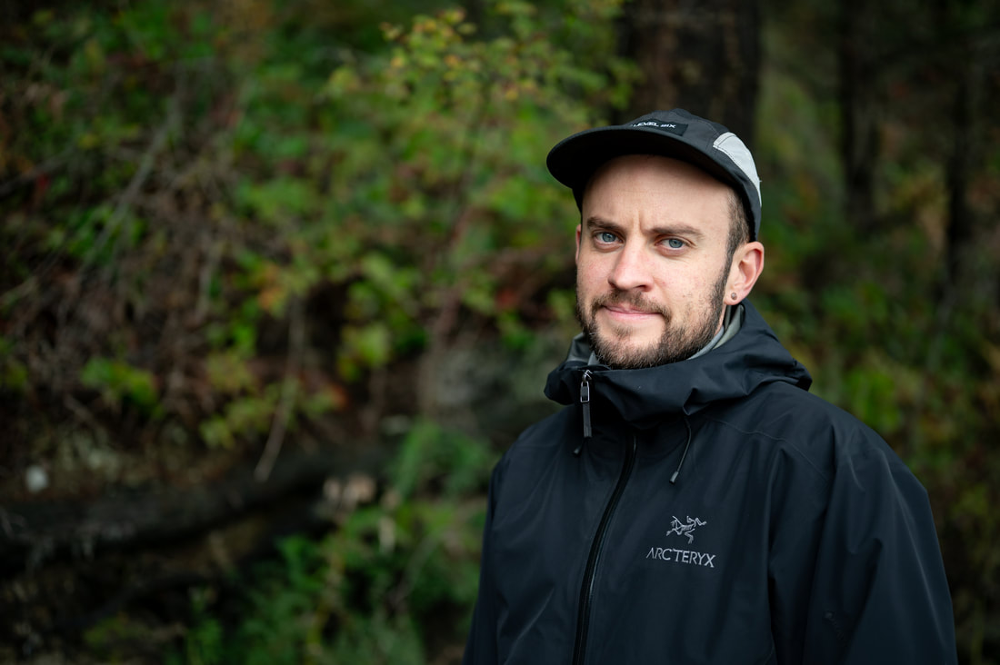
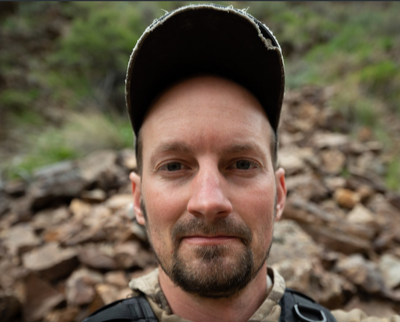
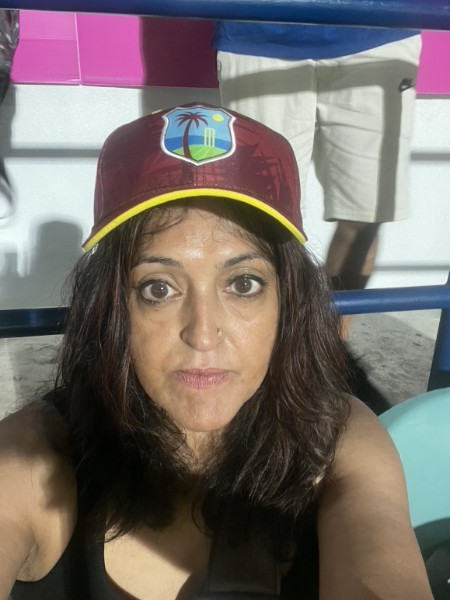
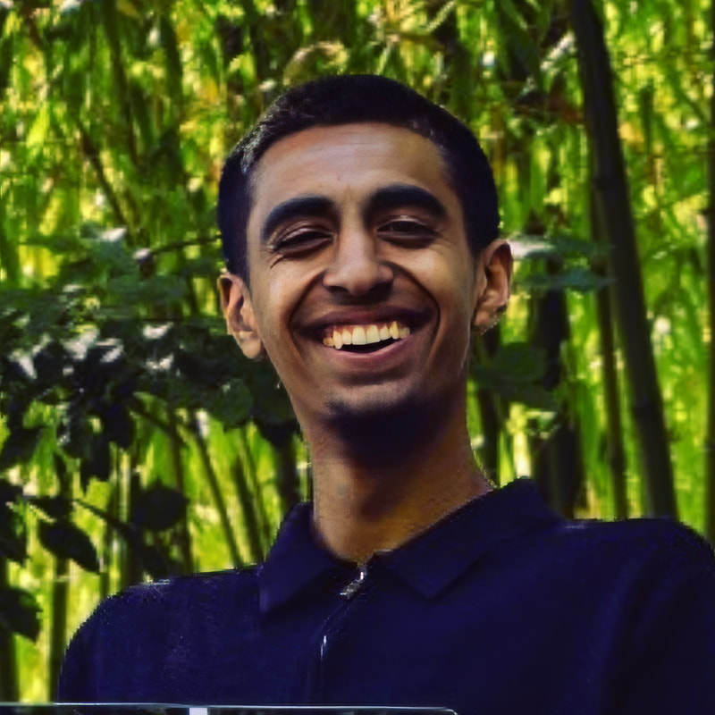

Rooted in resistance.
Committed to the land.
We have a recurring argument in the conservation world about whether to lead with hope or with urgency. We think this is the wrong argument. What we need to lead with is attention.
Pay attention to a particular place long enough and something happens. The place stops being scenery. The creek stops being a feature of the landscape and starts being a presence. The forest stops being a resource and starts being a community. You start to feel, in your body rather than your head, that you are not separate from what you are trying to protect.
That shift — from extraction to participation, from ownership to membership — is what we are working toward. Not as an abstract ideal but as a practical reorientation of how human beings relate to the places they inhabit. It requires, among other things, a conservation movement willing to say that the living world matters on its own terms. Not because it is useful to us. Not because it will help our children. Because it is alive, and alive things matter.
This is a long project. Fertile Ground Conservancy is a small organization with a specific role in it: we hold land that needs to be held, and we support the people doing the work that needs to be done. We do not think we will finish this in our lifetimes. We think it matters that we start.
We do not always know if what we are doing is enough. We do it anyway.
We operate a dual model: direct land stewardship and fiscal sponsorship of grassroots initiatives. These are not separate programs — they are expressions of the same underlying commitment. Protecting a Coho salmon watershed and sponsoring a mining resistance campaign are both acts of loyalty to the living world against the logic of extraction.
Our biocentric orientation means we take seriously the interests and inherent worth of nonhuman beings — not as a rhetorical gesture but as a practical constraint on how we work. We do not pursue conservation that trades ecological integrity for political palatability. We do not sponsor projects that compromise on the fundamental dignity of the living world.
We are a small organization. We do not pretend otherwise. What we offer is not scale but alignment — a fiscal and legal home for work that cannot find a home elsewhere, and a commitment to holding land in perpetuity for the benefit of the communities of life that inhabit it.
Ecological collapse is not primarily a technical problem. It is a cultural and political one — the consequence of an economic system organized around the premise that the living world is raw material. Technical interventions within that system produce technical outcomes. They do not change the premise.
We believe durable change requires two things happening simultaneously: the permanent removal of land from the extraction economy, and the sustained capacity of grassroots movements to challenge the conditions that threaten what remains. Neither is sufficient alone. Protected land without an active movement defending the conditions that make protection meaningful is vulnerable. A movement without the organizational infrastructure to survive over time loses ground as fast as it gains it.
Our theory of change is therefore structural and long-term. By permanently protecting specific parcels — beginning with the Elk Creek watershed — we remove land from the possibility of development in perpetuity, regardless of what political or economic conditions follow. By providing fiscal sponsorship to biocentric grassroots initiatives, we lower the organizational barriers that cause promising movements to collapse before they achieve their goals. Each sponsored project that survives long enough to win something demonstrates that this kind of work is viable. Each acre permanently protected is one fewer acre available to the logic of extraction.
We do not expect to see the full results of this work in our lifetimes. That is not a reason to do less — it is a reason to build the kind of infrastructure that outlasts any individual or political moment.
-
2009
Founded in Bellingham, Washington as a grassroots environmental education nonprofit. Began organizing in the community against the operation of Tar Sands pipelines beneath the city.
-
2011–2012
Organized a speaking tour across the West Coast, building coalitions across Indigenous, feminist, anti-war, and environmental movements.
-
2010–2014
Secured $250,000 in funding to organize the Earth At Risk conference series in the San Francisco Bay Area. Events featured Arundhati Roy, Alice Walker, Vandana Shiva, Chris Hedges, Dominique Christina, and other prominent social and ecological justice advocates. Over 1,000 attendees across the series.
-
2009–2019
Fiscally sponsored seven grassroots ecological initiatives, including Protect Thacker Pass, the Pinyon-Juniper Alliance, Rural Watch Africa Initiative, Viveros Farm, Mountain and Waters Alliance, the Sovereign Housing Project for the Ahousaht First Nation, and the Good Grief Group.
-
2019
Hosted Indigenous and Women of Color Rise in Seattle, Washington — an event focused on male violence, sexual exploitation, objectification, and racialization.
-
2024
Transitioned to a land conservancy model with a focus on conserving ecologically and culturally significant lands in the western United States, alongside continued fiscal sponsorship of aligned grassroots initiatives.
-
2025
Took ownership of our first stewarded parcel — 15 acres in the Elk Creek watershed, Del Norte County, California. Habitat for endangered Coho salmon, Northern Spotted Owl, Port Orford cedar, Pacific Giant salamander, Roosevelt elk, cougar, and black bear.
-

Dillon Thomson
Executive Director
Dillon is a co-founding member of Fertile Ground Conservancy and its first Executive Director. He grew up in the damp green of occupied Chehalis land — part of what is now known as western Washington State — a land plagued by clearcuts and dripping with wild beauty. It was seeing this beauty and wildness continually eaten away by new industry and development that made Dillon realize the dominant economic system is fundamentally at odds with the natural world. Later, he found a home for his love and grief in the deep ecology and conservation movements.
-

Max Wilbert
Board President
Max Wilbert is a writer and biocentric community organizer who has been part of grassroots political work for 20 years. He is the founder of Protect Thacker Pass and the author of two books, most recently Bright Green Lies: How The Environmental Movement Lost Its Way and What We Can Do About It (Monkfish, 2021). His work has been featured in the New York Times, CNN, NPR, Le Monde, BBC, and elsewhere.
-

Saba Malik
Secretary
Saba Malik has dedicated her adult life to environmental activism and community organizing. She has spoken at leading conferences including PIELC and Earth At Risk, sharing insights on ecological justice and the urgent need for systemic change. Currently, Saba focuses on supporting at-risk youth in the Bay Area through material assistance and mentorship. An early member of Fertile Ground, she brings decades of experience, passion, and vision to building a more just and sustainable future.
-

Rahman Malik
Treasurer
Rahman is a visionary entrepreneur who chose to diverge from the traditional path by forgoing college to pursue his dreams as a business owner. Fertile Ground Conservancy represents his passion for protecting wild nature, where he finds solace and thrives amidst the serenity of the wilderness.